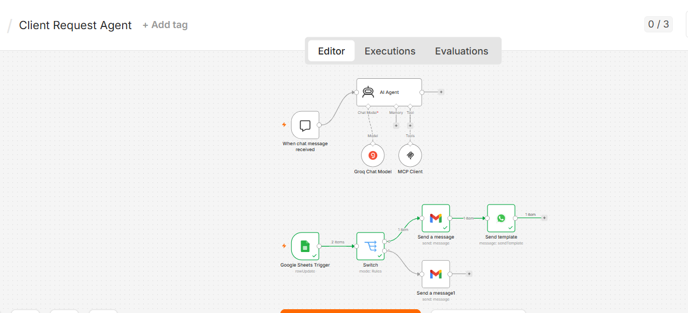

ClientOps AI
An MCP-powered agent that turns a plain-language client request into coordinated business actions.
From problem to system.
The problem
A client request can require several handoffs: create a record, find a meeting time, ask for approval, and notify people. Manually copying the request into each tool is slow and easy to miss.
The approach
An AI agent in n8n decides which MCP tools to call. The tool layer connects to Google Sheets, Google Calendar, an approval queue, Gmail, and WhatsApp. Human approval is part of the flow before downstream notifications.
The agent receives a natural-language client request and determines the required operations.
The MCP server exposes actions for records, scheduling, approvals, notifications, and summaries.
An approval decision triggers the relevant email and messaging workflow.

The repository includes workflow definitions and setup instructions. Running the integrations requires the operator’s own API and OAuth credentials; no live demo is linked there.